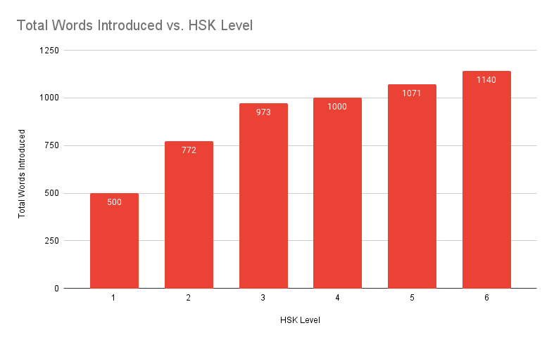

Help & About
This App
This is inteneded to be used for what I refer to as "brute force exposure" - in which is basically just exposing yourself to words over and over and they will stick (or at least they do for me).
My intent is for you to pick a set of vocab, and then focus on it for a period of time (i.e. 1 week, 2 weeks - its entirely up to you). After you feel comfortable with these, move onto another set - and come back to the previous set periodically. It's essentially like spaced repitition but without an algorithm or daily streaks dictating your life.
Each set of vocab consists of ~25 words in order as they appear in the official HSK 3.0 document. I have added to the dataset by including both simplified and traditional characters, a pinyin reading, and alternative tone reading, the zhuyin reading and the meaning. All of this information was obtained via cross checking between multiple dictionaries.
The only order of vocab I plan to implement is that of randomness - as I think it is beneficial to not have a standard order. This is due to learning the order instead of actually learning the vocab.
HSK Format
The Hanyu Shuiping Kaoshi (HSK) aka Chinese proficiency test is the standardised test for China. I chose to follow this for learning vocab as it is mostly in a way that makes sense and a lot of other material will work well in conjuncture with it (e.g. textbooks, HSK focused videos, courses, etc.).
HSK is split into main 6 levels of which cover the stages of beginner up to intermediate. Within these 6 levels, you're expected to learn around 5.4k words total. Previously vocabulary was drip fed, but as of HSK 3.0 the load is more spread out. Here is it all graphed:


Now I get it can be quite overwhelming - that sounds like a lot of words, and it is. Chinese is a hard language, mostly due to how different it is from English. However, I believe if you are motivated enough, consistent and have tangible achieveable goals in mind (e.g. Pass HSK 3), then you will be fine.
Motivation
I would encourage you at this point (assuming you are reading this at the start of your journey - if not maybe reflect on them) to write down your goals for the language. It's a big commitment of time, of which will have many highs and lows. Sometimes you may start to question why you are even bothering. Having these goals written down somewhere which you can refer to can be a good thing to keep you motivated or on track.
Acknowledgements
Thanks to elkmovie on Github for providing a .txt file of the list vocab list of the official HSK vocabulary list.
Thanks to myself for having far too much free time during holidays (in which is when I make/made the most progress on this).
Other
The GitHub repo